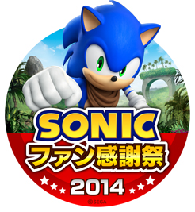
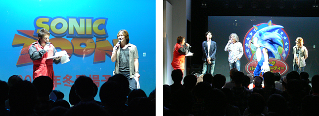

ソニック関連のイベント情報を紹介
2014.11.25

Wii U『ソニックトゥーン 太古の秘宝』、ニンテンドー3DS『ソニックトゥーン アイランドアドベンチャー』の発売を記念して、今年もソニックの聖地（！？）「東京ジョイポリス」にてイベント『ソニック ファン感謝祭 2014』を2014年12月28日（日）に開催いたします。
音速のハリネズミ「ソニック・ザ・ヘッジホッグ」のファンの皆様へ感謝を込めて実施するスペシャルイベントです。
ステージイベントやサイン会を行いますので、是非ご来場ください。

※写真は以前開催された他のイベントのものです
「ソニック」に関連するイラストを大募集！本イラストコンテストにて見事最優秀賞、優秀賞に輝いた作品は『ソニックファン感謝祭2014』のイベントステージ、ならびにソニック公式WEBサイト「ソニックチャンネル」内にて1月上旬に発表いたします。さらに受賞者には「ソニック」デザイナー上川祐司直筆イラスト色紙及びソニックグッズをプレゼント！！
詳しくはソニックチャンネル「『ソニック ファン感謝祭 2014』 ソニック イラストコンテスト開催！」ページをご確認ください。
| 会場 | 東京ジョイポリス（東京都港区台場1-6-1 デックス東京ビーチ3～5F） |
|---|---|
| 日時 | 2014年12月28日（日） |
| イベントスケジュール | 10:00：ステージ前観覧エリア入場整理券配布開始 配布場所： <1st Floor メインステージ>前 /配布数：200枚（先着） 13:30：<1st Floor メインステージ>ステージ前観覧エリア開場 14:00スペシャルステージ開演 16:00サイン会開始 |
| 登壇者 | 飯塚 隆 プロデューサー 上川 祐司 デザイナー 瀬上 純 サウンドディレクター 大谷 智哉 サウンドディレクター 中島 玄雅 ディレクター |
| 料金 | 「東京ジョイポリス」入場券が必要となります。 ・入場料（入場のみ）／大人800円、小中高生300円 ・パスポート （入場＋アトラクション乗り放題）／大人3,900円、小中高生2,900円 ・ソニック ファン感謝祭2014限定ノベルティ付きパスポート （入場＋アトラクション乗り放題）大人4,200円、小中高生3,200円 |
| 「ソニックファン感謝祭」特設サイト | http://tokyo-joypolis.com/event/sonic_fan2014/ |
| ソニック公式Twitter | https://twitter.com/sonic20th |
より詳しい情報は、東京ジョイポリス『ソニックファン感謝祭2014』特設サイトをご確認ください。